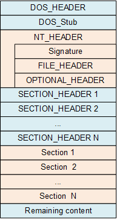
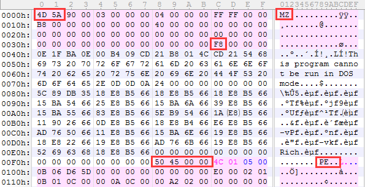

简介 PE（Portable Executable）格式，是微软Win32环境可执行文件（如exe、dll、sys等）的标准格式。
具体结构 具体的PE格式结构体在 winnt.h 头文件中有定义，格式分布如下图所示

在PE文件最开始的位置，包含有DOS执行体的信息，当该程序在不支持 PE文件格式的操作系统中，它将
1 2 3 4 5 6 7 8 9 10 11 12 13 14 15 16 17 18 19 20 21 typedef struct _IMAGE_DOS_HEADER { WORD e_magic; WORD e_cblp; WORD e_cp; WORD e_crlc; WORD e_cparhdr; WORD e_minalloc; WORD e_maxalloc; WORD e_ss; WORD e_sp; WORD e_csum; WORD e_ip; WORD e_cs; WORD e_lfarlc; WORD e_ovno; WORD e_res[4 ]; WORD e_oemid; WORD e_oeminfo; WORD e_res2[10 ]; LONG e_lfanew; } IMAGE_DOS_HEADER, *PIMAGE_DOS_HEADER;
在 DOS_HEADER 中关键的信息有两处，其一是 e_magic 信息，必为 0x5A4D 值，其二是 e_lfanew 信息，NT_HEADER 的偏移位置。使用VS编译的EXE程序多数为 0xF8 值。

在 NT_HEADER 中共包含三部分信息，其中 Signature 必为 0x4550 值，FILE_HEADER 在x86和x64系统中OPTIONAL_HEADER 则有一些细微的差别，如下所示
1 2 3 4 5 6 7 8 9 10 11 12 typedef struct _IMAGE_NT_HEADERS { DWORD Signature; IMAGE_FILE_HEADER FileHeader; IMAGE_OPTIONAL_HEADER32 OptionalHeader; } IMAGE_NT_HEADERS32, *PIMAGE_NT_HEADERS32; typedef struct _IMAGE_NT_HEADERS64 { DWORD Signature; IMAGE_FILE_HEADER FileHeader; IMAGE_OPTIONAL_HEADER64 OptionalHeader; } IMAGE_NT_HEADERS64, *PIMAGE_NT_HEADERS64;
FILE_HEADER 结构体如下，其中 Machine 的值，在x86平台是 0x014C，在x64平台是 0x8664
1 2 3 4 5 6 7 8 9 typedef struct _IMAGE_FILE_HEADER { WORD Machine; WORD NumberOfSections; DWORD TimeDateStamp; DWORD PointerToSymbolTable; DWORD NumberOfSymbols; WORD SizeOfOptionalHeader; WORD Characteristics; } IMAGE_FILE_HEADER, *PIMAGE_FILE_HEADER;
文件属性 Characteristics 的取值，在 winnt.h 中定义如下
1 2 3 4 5 6 7 8 9 10 11 12 13 14 15 #define IMAGE_FILE_RELOCS_STRIPPED 0x0001 #define IMAGE_FILE_EXECUTABLE_IMAGE 0x0002 #define IMAGE_FILE_LINE_NUMS_STRIPPED 0x0004 #define IMAGE_FILE_LOCAL_SYMS_STRIPPED 0x0008 #define IMAGE_FILE_AGGRESIVE_WS_TRIM 0x0010 #define IMAGE_FILE_LARGE_ADDRESS_AWARE 0x0020 #define IMAGE_FILE_BYTES_REVERSED_LO 0x0080 #define IMAGE_FILE_32BIT_MACHINE 0x0100 #define IMAGE_FILE_DEBUG_STRIPPED 0x0200 #define IMAGE_FILE_REMOVABLE_RUN_FROM_SWAP 0x0400 #define IMAGE_FILE_NET_RUN_FROM_SWAP 0x0800 #define IMAGE_FILE_SYSTEM 0x1000 #define IMAGE_FILE_DLL 0x2000 #define IMAGE_FILE_UP_SYSTEM_ONLY 0x4000 #define IMAGE_FILE_BYTES_REVERSED_HI 0x8000
在x86平台下的 OPTIONAL_HEADER32 结构体
1 2 3 4 5 6 7 8 9 10 11 12 13 14 15 16 17 18 19 20 21 22 23 24 25 26 27 28 29 30 31 32 33 34 35 typedef struct _IMAGE_OPTIONAL_HEADER32 { WORD Magic; BYTE MajorLinkerVersion; BYTE MinorLinkerVersion; DWORD SizeOfCode; DWORD SizeOfInitializedData; DWORD SizeOfUninitializedData; DWORD AddressOfEntryPoint; DWORD BaseOfCode; DWORD BaseOfData; DWORD ImageBase; DWORD SectionAlignment; DWORD FileAlignment; WORD MajorOperatingSystemVersion; WORD MinorOperatingSystemVersion; WORD MajorImageVersion; WORD MinorImageVersion; WORD MajorSubsystemVersion; WORD MinorSubsystemVersion; DWORD Win32VersionValue; DWORD SizeOfImage; DWORD SizeOfHeaders; DWORD CheckSum; WORD Subsystem; WORD DllCharacteristics; DWORD SizeOfStackReserve; DWORD SizeOfStackCommit; DWORD SizeOfHeapReserve; DWORD SizeOfHeapCommit; DWORD LoaderFlags; DWORD NumberOfRvaAndSizes; IMAGE_DATA_DIRECTORY DataDirectory[0x10 ]; } IMAGE_OPTIONAL_HEADER32, *PIMAGE_OPTIONAL_HEADER32;
在x64平台下的 OPTIONAL_HEADER64 结构体
1 2 3 4 5 6 7 8 9 10 11 12 13 14 15 16 17 18 19 20 21 22 23 24 25 26 27 28 29 30 31 32 33 34 35 typedef struct _IMAGE_OPTIONAL_HEADER64 { WORD Magic; BYTE MajorLinkerVersion; BYTE MinorLinkerVersion; DWORD SizeOfCode; DWORD SizeOfInitializedData; DWORD SizeOfUninitializedData; DWORD AddressOfEntryPoint; DWORD BaseOfCode; DWORD BaseOfData; ULONGLONG ImageBase; DWORD SectionAlignment; DWORD FileAlignment; WORD MajorOperatingSystemVersion; WORD MinorOperatingSystemVersion; WORD MajorImageVersion; WORD MinorImageVersion; WORD MajorSubsystemVersion; WORD MinorSubsystemVersion; DWORD Win32VersionValue; DWORD SizeOfImage; DWORD SizeOfHeaders; DWORD CheckSum; WORD Subsystem; WORD DllCharacteristics; ULONGLONG SizeOfStackReserve; ULONGLONG SizeOfStackCommit; ULONGLONG SizeOfHeapReserve; ULONGLONG SizeOfHeapCommit; DWORD LoaderFlags; DWORD NumberOfRvaAndSizes; IMAGE_DATA_DIRECTORY DataDirectory[0x10 ]; } IMAGE_OPTIONAL_HEADER64, *PIMAGE_OPTIONAL_HEADER64;
其中关于 Subsystem 的定义如下，表示该程序期望在什么环境下运行
1 2 3 4 5 6 7 8 #define IMAGE_SUBSYSTEM_UNKNOWN 0 #define IMAGE_SUBSYSTEM_NATIVE 1 #define IMAGE_SUBSYSTEM_WINDOWS_GUI 2 #define IMAGE_SUBSYSTEM_WINDOWS_CUI 3 #define IMAGE_SUBSYSTEM_OS2_CUI 5 #define IMAGE_SUBSYSTEM_POSIX_CUI 7 #define IMAGE_SUBSYSTEM_NATIVE_WINDOWS 8 #define IMAGE_SUBSYSTEM_WINDOWS_CE_GUI 9
数据目录表（DATA_DIRECTORY） 在 OPTIONAL_HEADER 中存储着 DATA_DIRECTORY 信息，结构体如下，
1 2 3 4 typedef struct _IMAGE_DATA_DIRECTORY { DWORD VirtualAddress; DWORD Size; } IMAGE_DATA_DIRECTORY, *PIMAGE_DATA_DIRECTORY;
数据目录表通常是 0x10 个，实际数量由 NumberOfRvaAndSizes 指定，内容如下所示
1 2 3 4 5 6 7 8 9 10 11 12 13 14 15 #define IMAGE_DIRECTORY_ENTRY_EXPORT 0 #define IMAGE_DIRECTORY_ENTRY_IMPORT 1 #define IMAGE_DIRECTORY_ENTRY_RESOURCE 2 #define IMAGE_DIRECTORY_ENTRY_EXCEPTION 3 #define IMAGE_DIRECTORY_ENTRY_SECURITY 4 #define IMAGE_DIRECTORY_ENTRY_BASERELOC 5 #define IMAGE_DIRECTORY_ENTRY_DEBUG 6 #define IMAGE_DIRECTORY_ENTRY_ARCHITECTURE 7 #define IMAGE_DIRECTORY_ENTRY_GLOBALPTR 8 #define IMAGE_DIRECTORY_ENTRY_TLS 9 #define IMAGE_DIRECTORY_ENTRY_LOAD_CONFIG 10 #define IMAGE_DIRECTORY_ENTRY_BOUND_IMPORT 11 #define IMAGE_DIRECTORY_ENTRY_IAT 12 #define IMAGE_DIRECTORY_ENTRY_DELAY_IMPORT 13 #define IMAGE_DIRECTORY_ENTRY_COM_DESCRIPTOR 14
在数据目录表的后边，就是用来描述每个节信息的 SECTION_HEADER，结构体如下
1 2 3 4 5 6 7 8 9 10 11 12 13 14 15 typedef struct _IMAGE_SECTION_HEADER { BYTE Name[0x08 ]; union { DWORD PhysicalAddress; DWORD VirtualSize; } Misc; DWORD VirtualAddress; DWORD SizeOfRawData; DWORD PointerToRawData; DWORD PointerToRelocations; DWORD PointerToLinenumbers; WORD NumberOfRelocations; WORD NumberOfLinenumbers; DWORD Characteristics; } IMAGE_SECTION_HEADER, *PIMAGE_SECTION_HEADER;
节的属性 Characteristics 比较常见的定义如下，更多信息见 winnt.h 的定义
1 2 3 4 5 6 7 8 9 10 11 12 13 14 15 16 #define IMAGE_SCN_CNT_CODE 0x00000020 #define IMAGE_SCN_CNT_INITIALIZED_DATA 0x00000040 #define IMAGE_SCN_CNT_UNINITIALIZED_DATA 0x00000080 #define IMAGE_SCN_LNK_INFO 0x00000200 #define IMAGE_SCN_LNK_REMOVE 0x00000800 #define IMAGE_SCN_LNK_COMDAT 0x00001000 #define IMAGE_SCN_NO_DEFER_SPEC_EXC 0x00004000 #define IMAGE_SCN_GPREL 0x00008000 #define IMAGE_SCN_LNK_NRELOC_OVFL 0x01000000 #define IMAGE_SCN_MEM_DISCARDABLE 0x02000000 #define IMAGE_SCN_MEM_NOT_CACHED 0x04000000 #define IMAGE_SCN_MEM_NOT_PAGED 0x08000000 #define IMAGE_SCN_MEM_SHARED 0x10000000 #define IMAGE_SCN_MEM_EXECUTE 0x20000000 #define IMAGE_SCN_MEM_READ 0x40000000 #define IMAGE_SCN_MEM_WRITE 0x80000000
虽然每个节的名称可以随意定义，但是也有一些约定俗成的名称，如下
名称
描述
.text
代码段，Borland C++编译器代码段为code
.data
可读写的数据段，存放全局变量或静态变量
.rdata
只读数据段，存放常量信息
.idata
导入数据段，存放导入表信息
.edata
导出数据段，存放导出表信息
.rsrc
资源段，存放图标、菜单等资源信息
.bss
未初始化数据段
.crt
存放用于支持C++运行时库(CRT)所添加的数据
.tls
存放用于支持通过_declspec(thread)声明的线程局部存储数据
.reloc
存放重定位信息
.sdata
存放可被全局指针定位的可读写数据
.srdata
存放可被全局指针定位的只读数据
.pdata
存放异常表，结构体为IMAGE_RUNTIME_FUNTCION_ENTRY
.debug$S
存放OBJ文件中Codeview格式符号
.debug$T
存放OBJ文件中Codeview格式类型符号
.debug$P
存放使用预编译头时的一些信息
.drectve
存放编译时的一些链接命令
.didat
存放延迟装入的数据
节数据对齐 节的对齐共有两种粒度，一种是在内存中对齐，由 SectionAlignment 参数决定，通常为 0x1000 值，FileAlignment 参数决定，通常为 0x200 值。操作系统在加载映像时，
关于内存地址与文件地址之间的转换，我们需要先理解两个概念
名称
描述
虚拟内存地址（Virtual Address，VA）
指PE文件被装入内存之后的地址
相对虚拟地址（Relative Virtual Address，RVA）
指相对于映像基址的内存地址偏移
计算方式为：虚拟内存地址(VA) = 映像基址(Image Base) + 相对虚拟地址(RVA)
以某代码段为例，虽然由于粒度的不同导致内存地址与文件地址有很大偏差，但是整个代码段的内容是不会变得，
关系式为：文件偏移地址 = 所在节的起始文件偏移 + (虚拟内存地址 - 映像基址 - 所在节的起始虚拟内存偏移)
节头中的 VirtualAddress 表示该节的 起始虚拟内存偏移，PointerToRawData 表示该节的 起始文件偏移。